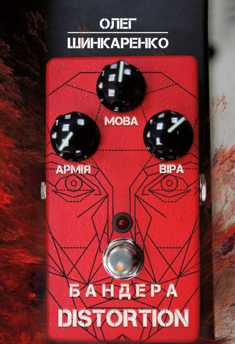

Бандера Distortion¶

Опубліковано: 2019 · Жанр: Роман
Історична проза Політична проза Метамодернізм Українська література
Роман не зводить Бандеру до одного значення — і показує, що саме прагнення бездоганного національного символу є небезпечним спрощенням.
Цей роман береться за одну з найсуперечливіших постатей української історії — Степана Бандеру — і робить ризиковану, але необхідну річ: не зводить його до одного значення. Замість того щоб обирати між героєм і злочинцем, автор лишається в незручному просторі між цими полюсами.
Від самого початку зрозуміло, що це не біографія, а дослідження викривлення. Уже сама інтелектуальна рамка книжки вказує на напругу між Бандерою-людиною і Бандерою-міфом: джерела показують його і як історичну постать, і як сконструйований символ. Ця двоїстість і стає рушієм роману.
Бандера тут не ікона чистого національного визволення — і не карикатура. Це глибоко людська постать: рішуча, вперта, ідеологічно жорстка, здатна і на відданість, і на сліпоту. Роман наголошує на тому, що часто губиться в політичних суперечках: історичні діячі — не завершені моральні вироки, а суперечності в русі.
Найцікавіше в книжці — те, як людина на очах перетворюється на символ. Бандера-персонаж поступово зникає під нашаруваннями тлумачень, привласнень і проєкцій. Різні голоси — політичні, культурні, пропагандистські — намагаються заволодіти ним, перекроїти, ідеалізувати чи демонізувати. У підсумку постає не ясність, а розпорошеність.
Ця розпорошеність відбиває ширшу проблему — неможливість єдиного наративу, таку характерну для метамодерної доби. Як і в інших болючих історіях, суперечливі тлумачення тут не зливаються в одне, а співіснують, нерідко силоміць. Бандера стає не так героєм оповіді, як полем бою.
Але головний хід роману етичний, а не політичний. Він не дає читачеві вмоститися в зручне, остаточне судження. Натомість показує: сама пристрасть до «правильного символу», бездоганного втілення національної боротьби, вже є спрощенням. Текст тихо стверджує, що жодна реальна історична постать такого тягаря не витримає.
У книжці відчутне й попередження про небезпеку міфотворчості. Щойно постать стає символом, її людська складність стирається, а з нею зникає й здатність критично мислити. Роман показує, як цей процес спотворює і минуле, і сучасне, перетворюючи історію на інструмент, а не на простір для розуміння.
Ця хиткість позначається й на стилі. Оповідь перемикається між документальною, сповідальною й іронічною інтонаціями, і здається, що текст сам не здатен цілком умістити свого героя. Це не вада, а свідомий вибір: форма показує, що Бандеру неможливо втиснути в одну авторитетну розповідь.
Зрештою роман не лише про Бандеру. Він про те, як суспільство творить сенси з недосконалих людей і що при цьому втрачає. Повертаючи складність постаті, яку часто сплощують до гасла, книжка здійснює своєрідну літературну деміфологізацію — не щоб применшити історію, а щоб зробити її чеснішою.
Це глибоко людська і глибоко незручна книжка. Вона не каже, ким Бандера «був насправді». Натомість ставить запитання: навіщо нам, щоб він був простим, — і чому ця потреба небезпечна.